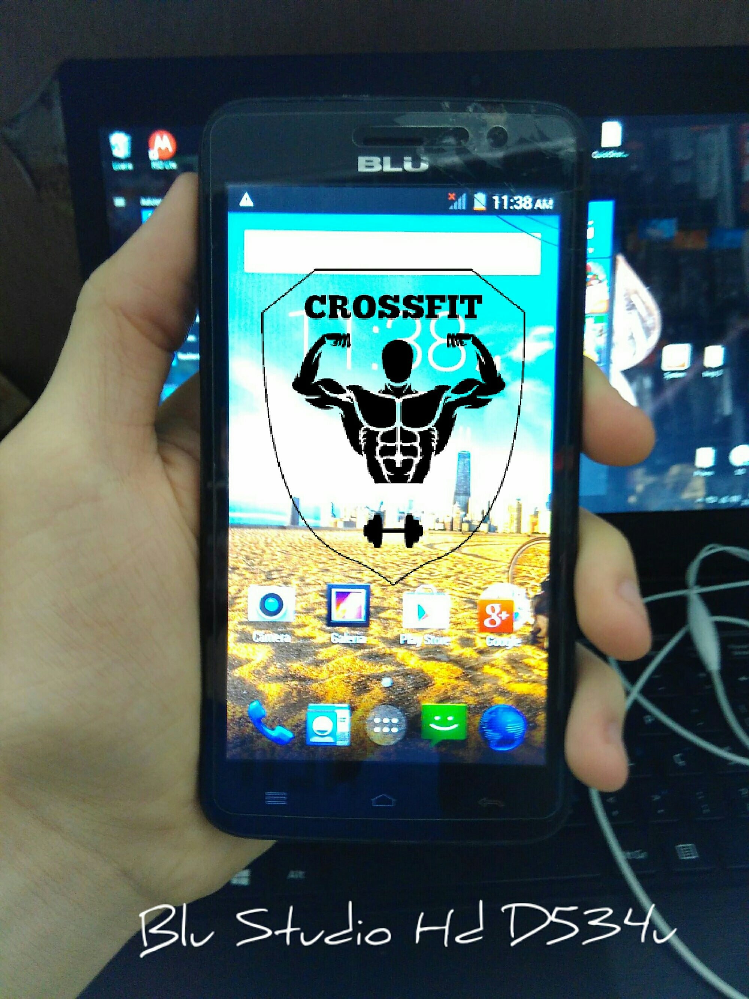
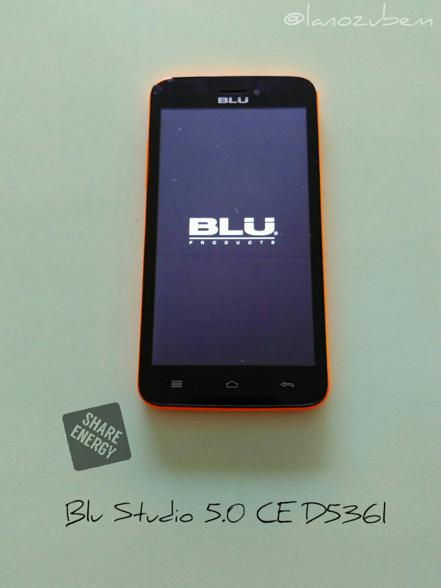
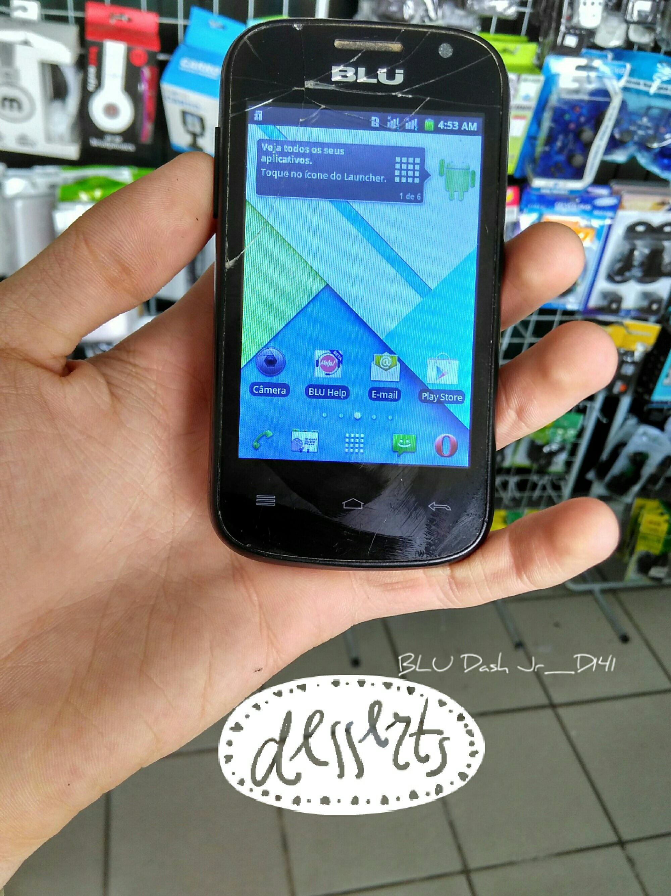
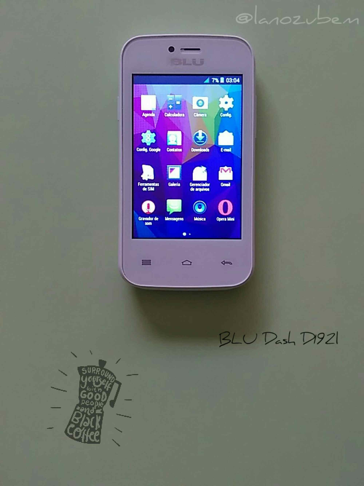
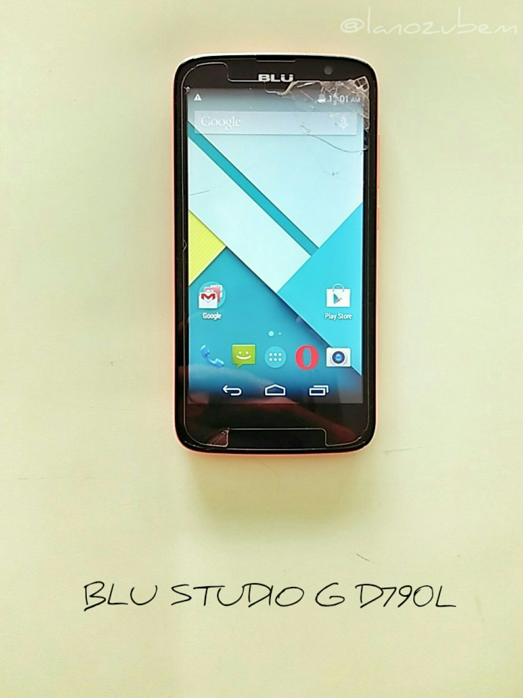
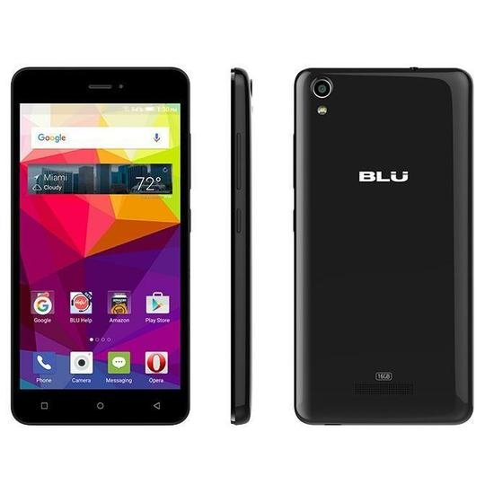

Pra que quebrar cabeça se o Hard reset BLU está aqui
- Outros |
- Hard_reset |
- BLU
Para agilizar pressione a tecla F3 e ensira o modelo.
-
Hard Reset no BLU DASH JR 3G D190L
Remoção do bloqueio de tela do BLU DASH JR 3G -
Hard Reset Blu Studio 5 D534U
Remoção do bloqueio de tela do Blu Studio_5 -
Hard Reset Blu Studio 5 CE D536l
Remoção do bloqueio de tela do Blu Studio 5.0 CE -
Hard Reset para o BLU DASH JR D141W
Remoção do bloqueio de tela do Blu Dash JR -
Hard Reset Blu Dash Jr D192L
Remoção do bloqueio de tela do Blu Dash -
Hard Reset Blu Studio G D790L
Remoção do bloqueio de tela do Blu Studio G -
Hard Reset Blu Advance 4 L A010L

Remoção do bloqueio de tela do Blu Advance 4 L -
Hard reset BLU Std' 5.0 C M' D670L

Remoção do bloqueio de tela do Blu Studio 5.0 C -
Hard Reset para o BLU Dash D140S

Remoção do bloqueio de tela do BLU DASH SOCIAL -
Hard Reset BLU Studio M HD S110L
Remoção do bloqueio de tela do Blu Studio M HD -
Hard Reset BLU Advance L2 A030L

Remoção do bloqueio de tela do BLU Advance L2